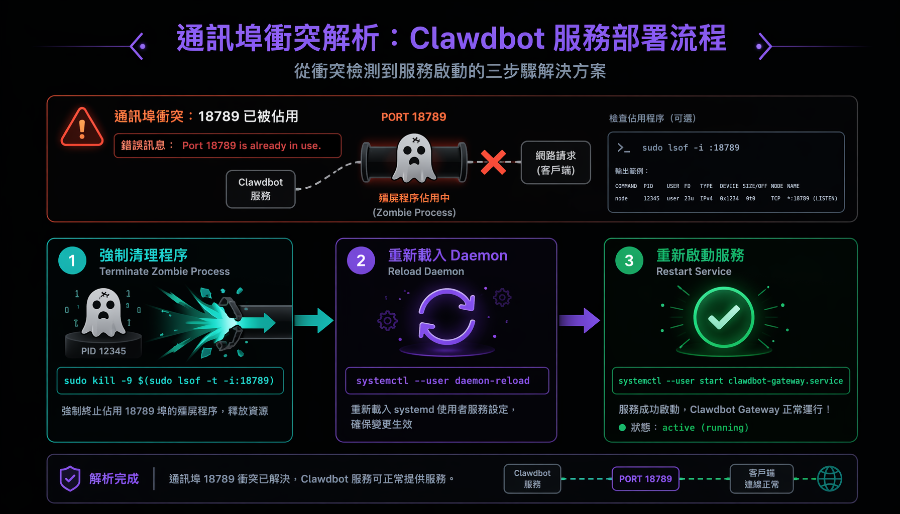
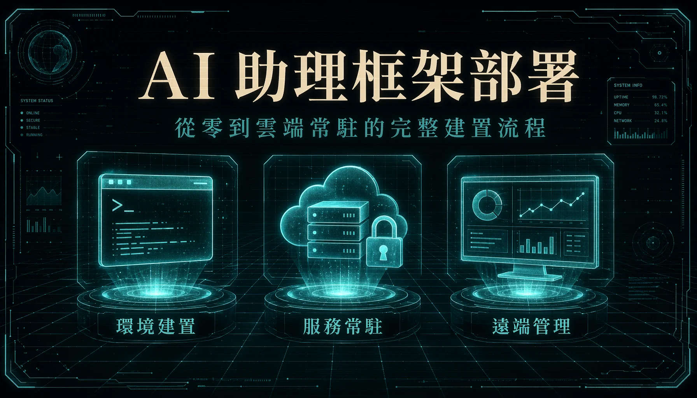
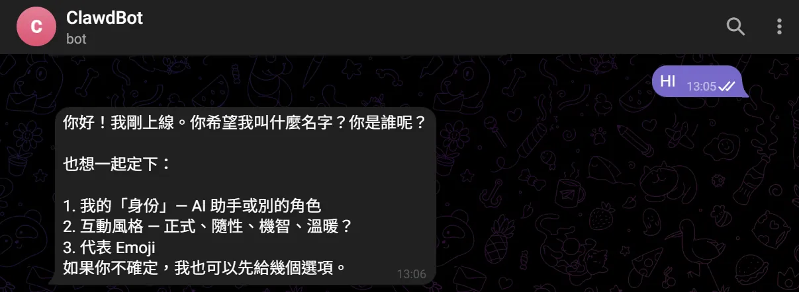

本專案紀錄把一套開源 AI 代理框架（Clawdbot）裝到雲端虛擬機、變成 24 小時待命的個人 AI 助理的完整流程。這是上篇，聚焦基礎設施：環境配置、服務常駐化（Daemonize，讓程式在背景持續運行、關掉終端機也不會停）、到從本機安全存取控制面板。目標是建立一個穩定運行、遠端可控的獨立 AI 服務節點。
Clawdbot 是一套開源的 AI 代理人框架，把它部署在雲端伺服器（本專案用 Azure 提供的雲端虛擬機）後，就有一個 24 小時運作的個人 AI 助理。完整版本（下篇）能接管 Gmail 收信、Google 行事曆、Drive 等 Google 服務，例如「幫我看今天有什麼信」「明天行事曆怎麼安排」這類自然語言指令都能直接執行。
本篇是上篇，紀錄把這個 AI 助理「裝起來、能穩定跑」所需的所有基礎設施步驟：登入雲端主機、安裝套件、把程式設定成背景常駐執行、從本機透過加密通道存取後台。下篇紀錄如何接 Google 帳號與實際使用方式。

# 階段一：部署環境先決條件 (Prerequisites)
為確保 Clawdbot 框架具備獨立且穩定的運算資源，系統建置需滿足以下物理與網路條件：
- 運算節點 (Cloud VM)： 具備獨立對外 IP 的雲端虛擬機器（本專案採用 Azure VM，作業系統環境為 Ubuntu）。
- 安全憑證： 用於非對稱加密登入之 SSH 私鑰檔案（
<YOUR_KEY.pem>）。 - 本地控制端： 已配置 PowerShell 或相應 CLI 終端機環境之本機電腦。
# 階段二：建立安全連線 (SSH Protocol)
基於安全性考量，系統拒絕常規密碼登入。於本機終端機切換至金鑰所在目錄，執行 SSH 通訊協定以進入遠端 Ubuntu 伺服器環境：
cd <YOUR_LOCAL_KEY_PATH>
ssh -i <YOUR_KEY.pem> <YOUR_VM_USER>@<YOUR_VM_IP># 階段三：核心服務建置與常駐 (Service Provisioning)
透過 Node Package Manager (npm) 進行框架本體的安裝。為確保 AI 代理程序於終端機會話 (Session) 中斷後仍能持續於後台運作，必須將其註冊為 systemd 的背景服務：
# 1. 執行全域安裝
sudo npm install -g clawdbot@latest
# 2. 驗證依賴套件與版本號
clawdbot --version
# 3. 建立並啟動 Systemd User Service
clawdbot gateway setup --user
systemctl --user start clawdbot-gateway.service
# 4. 檢閱服務狀態 (確認為 active (running))
systemctl --user status clawdbot-gateway.service# 階段四：例外處理 - Port 衝突排障 (Conflict Resolution)
在系統反覆部署與重啟的過程中，常遇服務啟動失敗的例外狀況。經查閱系統日誌，若確認錯誤碼為 Port 18789 is already in use，即代表有殭屍程序 (Zombie Process) 或舊版實例佔用通訊埠。此時需介入進行強制清理程序：
# 1. 終止並卸載所有相關服務與殘留設定檔
systemctl --user stop clawdbot-gateway.service
systemctl --user stop openclaw-gateway.service 2>/dev/null
systemctl --user disable openclaw-gateway.service 2>/dev/null
rm -f ~/.config/systemd/user/openclaw-gateway.service
# 2. 釋放通訊埠：強制終止 (kill -9) 佔用 18789 的程序
sudo kill -9 $(sudo lsof -t -i:18789) 2>/dev/null
# 3. 重載守護行程並重啟淨化後的服務
systemctl --user daemon-reload
systemctl --user reset-failed clawdbot-gateway.service
systemctl --user start clawdbot-gateway.service# 階段五：安全穿透與控制面板存取 (SSH Tunneling)
基於網安原則，Clawdbot Gateway 預設僅綁定於伺服器的 Localhost 網卡，直接開放防火牆外部埠口將構成嚴重的資安漏洞。因此，採取 SSH 隧道 (Port Forwarding) 技術，於本機另開終端機建立加密通道，將遠端 18789 埠口安全映射至本機端：
ssh -i <YOUR_KEY.pem> -N -L 18789:127.0.0.1:18789 <YOUR_VM_USER>@<YOUR_VM_IP>隨後返回 VM 終端機，提取 Dashboard 路由位址與權限驗證 Token：
clawdbot dashboard複製系統輸出之 URL，將 127.0.0.1 轉換為 localhost，即可於本機瀏覽器存取控制介面。若遭遇 Token 授權失效，可透過 CLI 指令 clawdbot config set gateway.auth.token <TOKEN> 強制覆寫驗證金鑰。

# 階段性驗證 (System Validation)
底層通訊與服務常駐配置完成後，透過串接 Telegram API 進行端點測試，確認訊息收發與 AI 代理模型的運算反饋功能皆正常運作。此階段標誌著基礎設施層的部署完成，為後續複雜意圖邏輯的掛載提供穩固載體。
